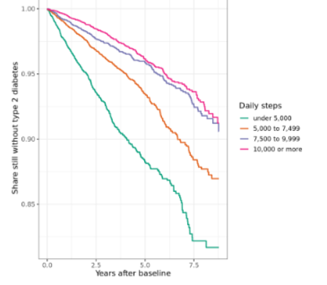

6.2 Steps and Type 2 Diabetes
Wearables series, class 2 of 3 · R + SQL · 95 minutes
Open the notebook on GitHub Wearables series overview
Overview
Do people who take more steps a day develop type 2 diabetes less often? In this class we follow every All of Us participant with Fitbit data forward in time: their daily steps are measured first, and then we watch who is diagnosed with type 2 diabetes later, and when. It’s the design of a published All of Us study, and it fixes the biggest problem we met in the survey series: answers given after a diagnosis.
Why this class matters
In 5.2, most people with diabetes answered the Lifestyle survey after their diagnosis, so their answers could reflect the diagnosis (people quit smoking, or cut down on alcohol, because of it). A prospective design, where the exposure is measured before the outcome, is the standard way around that, and wearables make it possible: Fitbit records steps day by day, with exact dates.
By the end you’ll be able to
- Explain a prospective cohort design, and why it avoids reverse causation
- Build baseline steps, eligibility, and follow-up from dates, mostly inside BigQuery
- Calculate incidence rates per 1,000 person-years
- Draw Kaplan–Meier curves and fit a Cox model for a new outcome (from 3.4)
- Choose what to adjust for: confounders vs a possible mediator
- Test the result with a sensitivity analysis (a lag)
Analysis at a glance
| ❓ Question | Among adults without diabetes, do those who take more steps a day develop type 2 diabetes less often? |
| 🧪 The analysis | Baseline steps over each person’s first 6 months of Fitbit data; follow-up for a new diagnosis; incidence rates; Kaplan–Meier curves; Cox models (age and sex, then + BMI); a 1-year lag |
| 🎯 Why | Steps measured before any diagnosis can’t be the result of it. Survival methods use everyone’s follow-up, however long |
| ✅ What we conclude | How the rate of new type 2 diabetes differs by daily steps |
| ⚠️ What it can’t tell us | Cause. People who walk more differ in many ways (income, health, diet). And Fitbit users aren’t typical |
| 🔗 Connections | Valid days and costs from 6.1; the cohort query from 1.1; survival methods from 3.4; reverse causation from 5.2; confounders and mediators from 5.3 |
Time and cost
| ⏱️ Class time | 95 minutes |
| ⏱️ Run time | about 5 minutes |
| 💰 Cost | about $1 per student: the cohort query, and one query for everyone’s baseline steps and BMI ($0.18 in our test run) |
| 📋 Before class | 6.1 is helpful (valid days, costs), and 3.4 (survival analysis) |
Class plan
| Time | Part | You do |
|---|---|---|
| 0:00 | 1. Key concepts: the design, in one timeline | listen, discuss |
| 0:20 | 2–3. The cohort; baseline steps in BigQuery | run the cells |
| 0:40 | 4. Who’s in the analysis: the flow table; follow-up | run the cells |
| 0:55 | 5. Incidence rates and Kaplan–Meier curves | run the cells, discuss |
| 1:10 | 6. Cox models: with and without BMI | ✋ Try It Out (5 min) |
| 1:20 | 7. A 1-year lag | discuss |
| 1:30 | Wrap-up |
Key concepts
Measure first, then follow
first valid end of baseline end of follow-up
Fitbit day (6 months later) (last EHR visit, death, or 2025)
|──── baseline ────|──────────────── follow-up ─────────────────────|
median daily does type 2 diabetes appear? when?
steps
excluded: anyone with type 2 diabetes (or another kind of diabetes) before the end of baselineThis design avoids reverse causation by construction: steps are measured before any diagnosis, so the diagnosis can’t have changed them. It follows the published All of Us study of step counts and chronic disease (Master et al., Nature Medicine, 2022).
Why not use our sample of 5,000 cases and 5,000 controls? The cases were chosen because they already had diabetes, and for most of them Fitbit data starts after the diagnosis. Only a few hundred have Fitbit data at all (6.1). Following all Fitbit users forward is both larger and more honest.
Words for this design
| Term | Means |
|---|---|
| Baseline | when the exposure is measured: each person’s first 6 months of valid Fitbit days |
| Exposure | what might affect the outcome: median daily steps at baseline |
| Incident case | a new diagnosis during follow-up. A prevalent case already had diabetes at baseline: excluded |
| Censoring | follow-up ends without the outcome: the last EHR visit, death, or the end of the data |
| Person-years | total time followed: 100 people for 2 years = 200 person-years |
| Incidence rate | new cases ÷ person-years, often per 1,000 person-years |
| Hazard ratio | the rate in one group ÷ another, at any moment: HR 0.5 = half the rate |
What to adjust for
| Variable | Role | Adjust? |
|---|---|---|
| Age, sex | affect both steps and diabetes risk: confounders | yes |
| BMI | a confounder (heavier people may walk less) and a possible mediator (walking → lower weight → less diabetes) | show both models |
The model without BMI is the main result. The model with BMI shows the part of the link not explained by weight.
Follow along in the Workbench
- Start your app and pull the newest notebooks, as in 1.1.
- Open
notebooks/wearables/6.2 steps_and_t2d.ipynb, with the R kernel.
Try It Out
Compare people in the analysis with all adults in the cohort query: age, percent female, percent cases. Who uses a Fitbit, and who might the result not apply to?
✅ Check: Fitbit users are a selected group, with far fewer cases (people with diabetes at baseline were excluded, and fewer of them use Fitbits).
Code walk-through
Baseline steps for everyone, in one query
1WITH wear AS (…),
valid AS (…),
first_day AS (
2 SELECT person_id, MIN(date) AS first_valid FROM valid GROUP BY person_id
),
baseline AS (
SELECT v.person_id,
MAX(v.date) AS baseline_end,
COUNT(*) AS baseline_days,
3 APPROX_QUANTILES(v.steps, 100)[OFFSET(50)] AS baseline_steps
FROM valid AS v JOIN first_day AS f ON v.person_id = f.person_id
4 WHERE v.date < DATE_ADD(f.first_valid, INTERVAL 6 MONTH)
GROUP BY v.person_id
),
5bmi AS (…)
6SELECT … FROM baseline … WHERE baseline_days >= 10- 1
- Wear minutes and valid days, as in 6.1.
- 2
- Each person’s first valid Fitbit day.
- 3
- BigQuery’s fast median: the 50th of 100 percentiles.
- 4
- Only the first 6 months: the baseline.
- 5
- The latest BMI in the 2 years before the end of baseline.
- 6
- One row per person with at least 10 valid baseline days. BigQuery does the work; only tens of thousands of rows come back, instead of tens of millions.
Follow-up, from dates
followup <- joined %>%
filter(cohort != "excluded",
1 !(cohort == "case" & t2d_date <= baseline_end),
age_at_baseline >= 18,
2 followup_end > baseline_end) %>%
3 mutate(event = as.integer(cohort == "case" & t2d_date <= followup_end),
exit_date = if_else(event == 1, t2d_date, followup_end),
4 years = as.numeric(exit_date - baseline_end) / 365.25)- 1
- Leave out prevalent cases: diagnosed before baseline ended.
- 2
- Keep people with some EHR follow-up after baseline.
- 3
- The event: a type 2 diabetes diagnosis during follow-up.
- 4
- Years from the end of baseline to diagnosis, or to censoring.
Cox models, on the same people
- 1
- The main model: adjusted for the confounders, age and sex.
- 2
- Plus BMI: what’s left after accounting for weight.
- 3
- Steps as a number: the hazard ratio for each extra 1,000 steps a day.
What we found
Results from our test run in November 2026 (CDR v9).
Who was studied
| Rule | People |
|---|---|
| Fitbit baseline, and in the cohort query (adults with EHR) | 39,553 |
| not “excluded” (type 1 or unclear diabetes) | 38,516 |
| no type 2 diabetes by the end of baseline | 33,874 |
| 18 or older | 33,819 |
| some EHR follow-up after baseline | 25,724 |
1,185 new cases of type 2 diabetes over 85,879 person-years (a median of 2.6 years each): 13.8 per 1,000 person-years.
Rates by daily steps
| Daily steps at baseline | People | New cases | Rate per 1,000 person-years |
|---|---|---|---|
| under 5,000 | 7,096 | 424 | 25.5 |
| 5,000 to 7,499 | 7,526 | 371 | 14.5 |
| 7,500 to 9,999 | 5,619 | 205 | 9.6 |
| 10,000 or more | 5,483 | 185 | 8.3 |

The curves separate from the first year (log-rank chi-square 250, p < 0.001). The biggest gap is between under 5,000 and the rest; the two highest groups nearly overlap. The curves stop where any group has fewer than 50 people still followed.
Hazard ratios
| Compared with under 5,000 steps a day | Age and sex | + BMI | With a 1-year lag |
|---|---|---|---|
| 5,000 to 7,499 | 0.50 (0.41 to 0.61) | 0.62 (0.51 to 0.76) | 0.58 (0.45 to 0.74) |
| 7,500 to 9,999 | 0.32 (0.25 to 0.41) | 0.46 (0.36 to 0.60) | 0.36 (0.26 to 0.48) |
| 10,000 or more | 0.27 (0.21 to 0.34) | 0.42 (0.32 to 0.55) | 0.32 (0.23 to 0.43) |
| Per extra 1,000 steps (age and sex) | 0.86 (0.83 to 0.88) |
- Main result: people taking 10,000 or more steps a day had about a quarter of the rate of new type 2 diabetes of those taking under 5,000, adjusted for age and sex. Each extra 1,000 steps a day went with a 14% lower rate.
- BMI explained part of the link (hazard ratios moved toward 1), but most remained.
- The 1-year lag barely changed the results: early, undiagnosed illness doesn’t explain them.
- The benefit levels off above about 7,500 steps. “10,000 steps a day” isn’t a threshold.
💬 Discuss: this is still an association, in a selected group. What else differs between people who walk more and less? Could people who walk more see doctors less, and be diagnosed later? What evidence would convince you that walking itself lowers the risk?
Instructor notes
- Draw the timeline before anything else. Most of the class follows from it.
- “Avoids reverse causation by construction” is the key phrase: compare with 5.2, where most survey answers came after diagnosis.
- BMI: confounder or mediator? Ask students to argue both sides before showing model 2.
- The flow table is worth slowing down for: each rule is a decision a reader needs to know about.
- Kaplan–Meier curves end early on purpose: where few people remain, curves describe very few people and jump around.
- Proportional hazards: the check gave p = 0.004 for steps. Discuss what it means for activity measured once, over 6 months, but followed for years.
- Likely question: “Is 10,000 steps magic?” No: the number came from a 1960s Japanese pedometer advertisement. Look at the gradient, which levels off above about 7,500 here.
Key takeaways
- A prospective design measures the exposure before the outcome: it avoids reverse causation by construction
- Build baseline, eligibility, and follow-up from dates, and report a flow table
- Incidence rates, Kaplan–Meier curves, and Cox models answer “how often” and “how soon”
- Adjust for confounders; show models with and without a possible mediator
- A lag tests whether undiagnosed illness explains the result
- It’s still an association, in a selected group
Next
6.3 Sleep and heart rate: the same design for sleep and resting heart rate.